Super-resolution:five architectures with visible tensor optimization
Abstract
Construct genuine x2 CIFAR degradation pairs with antialiased Keys bicubic tensors. Explain CRD shuffle,RCAN channel gates and VDSR adjustable clipping,then run all five full/compact graphs. Show every optimizer update for SRCNN,ESPCN,VDSR,EDSR and RCAN,restore independent prediction-only stores,and compare all32 held-out images on identical studio-range Y coordinates against unchanged bicubic.
Source example: examples/cpp/source/nn/1_convolutional_neural_networks/1.8_other_vision_tasks/super_resolution.cpp.
The method
The observation is a genuine16x16 downsampled image. Models either consume that LR grid or a bicubic32 interpolation derived from it. Training targets remain original32x32 pixels. Reusable tensor APIs own forward mechanisms and data transformations;the report explicitly owns optimizers,loops and checkpoint selection. Only evaluation/display clips predictions. No fitted baseline is hidden:the bicubic reference is fixed interpolation.
The concept diagram below is drawn by dm::graphics::Diagram. Its editable C++
source is the complete block below; regeneration uses the same datamunge toolchain
as the numerical examples. Exports consume the saved local SVG.
#include <dm/dm.hpp>
int main() {
std::filesystem::create_directories("build");
dm::graphics::Diagram diagram;
diagram.node("n0", {0.0, 0}, "Original HR pixels\nTrue LR observations");
diagram.node("n1", {5.2, 0}, "Five learned graphs\nVisible optimizer loops");
diagram.node("n2", {10.4, 0}, "Restore and predict\nCompare with bicubic");
diagram.edge("n0", "n1").edge("n1", "n2");
diagram.save_svg("build/super_resolution_concept.svg");
}
Executed tensor architecture
The figure selects the compact RCAN reconstruction path; the report compares its behavior with the other declared super-resolution architectures.
This figure executes the inference configuration shown in the code, using a zero-valued shape probe without fitting or loading a checkpoint. Named stage boundaries group whole subgraphs where available; other nodes retain functional-layer detail. Exact batch-inclusive shapes and reachable parameter totals come from the trace. Shared linear scales map spatial dimensions and channel counts to blocks; the one-pixel visibility floor is disclosed in the legend. Labels use compact monospace text, rotate counterclockwise and sit beside their own glyphs. Arrows flow left to right; wide diagrams scroll at native size on the website.
#include <dm/dm.hpp>
int main() {
namespace n = dm::nn;
namespace m = n::models;
n::set_num_threads(2);
std::filesystem::create_directories("build");
n::ParameterStore p(17), state(18);
const auto c = m::SRConfig::Compact(m::SRKind::kRcan);
n::Module architecture_model(
[&](const n::Tensor& image) { return m::SuperResolution(p, image, c).image; },
"Super-resolution:five architectures with visible tensor optimization");
n::ModelPlotOptions options;
options.style = n::ModelPlotStyle::Flow;
options.detail = n::ModelPlotDetail::Blocks;
options.labels = {.type = n::ModelPlotLabel::NameAndShape, .size = 12, .wrap = 24};
options.spacing = {.layer = 24, .lane = 12, .label = 8, .margin = 20};
options.sizing.spatial_size = 96;
options.sizing.channel_size = 42;
options.sizing.minimum_extent = 1;
options.opacity = .8;
const auto diagram = architecture_model.plot(n::zeros({1, 16, 16, 3}), options);
diagram.save_svg("build/super_resolution_architecture.svg");
std::print(
"{} displayed nodes; {} reachable learned values.\n",
diagram.nodes().size(),
diagram.parameter_count());
}82 displayed nodes; 45851 reachable learned values.
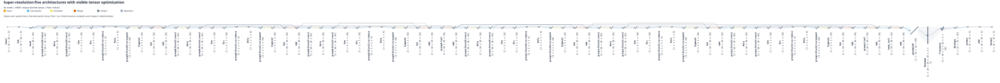
Bicubic degradation has a phase,negative lobes and antialiasing
A true x2 pair starts from original CIFAR32x32 RGB,downsamples to16x16,
then computes a32x32 bicubic reference from the LR image. HR is never a
network input. Keys a=.5 uses centers(i+.5)/scale.5;downsampling widens
the cubic support. Symmetric edges duplicate the boundary sample. Both
passes sum in Float64 and round through Float32 between columns and rows.
Negative lobes and overshoot remain in the raw interpolation.
#include <dm/dm.hpp>
int main() {
namespace n = dm::nn;
namespace m = n::models;
const auto x = n::arange(-2., 2.001, .01, n::DType::Float64), kernel = m::SRCubicTensor(x);
const auto impulse = n::tensor({0., 0., 1., 0., 0.}, {1, 1, 5, 1}).requires_grad_();
const auto y = m::SRBicubic(impulse, 1, 10), g = n::grad(n::sum(n::square(y)), {impulse})[0];
const auto matrix = m::SRContributionMatrix(5, 10);
std::print(
"Normalized weight row error {:.3g};input derivative norm {:.6f};raw impulse "
"minimum {:.6f}.\n",
n::max(n::abs(n::sum(matrix, {1}) - 1.)).item(),
n::sqrt(n::sum(g * g)).item(),
n::min(y).item());
auto a = dm::graphics::RPlot::create(), b = dm::graphics::RPlot::create();
a.lines(x.to_vector<double>(), kernel.to_vector<double>(), "Keys a=-.5", {37, 99, 235})
.title("Signed cubic kernel")
.x_label("signed sample offset")
.y_label("kernel weight")
.y_limits(-.2, 1.3);
b.lines(
n::arange(0, 10).to_vector<double>(),
y.to_vector<double>(),
"upsampled impulse",
{220, 38, 38})
.title("Half-pixel impulse response")
.x_label("output sample index")
.y_label("raw value")
.y_limits(-.2, 1.2);
auto layout = dm::graphics::RLayout::create(1, 2);
layout.add(a).add(b).size(1100, 500).fit_panels().save_svg("build/super_resolution_bicubic.svg");
}Normalized weight row error 0;input derivative norm 3.323882;raw impulse minimum -0.070312.
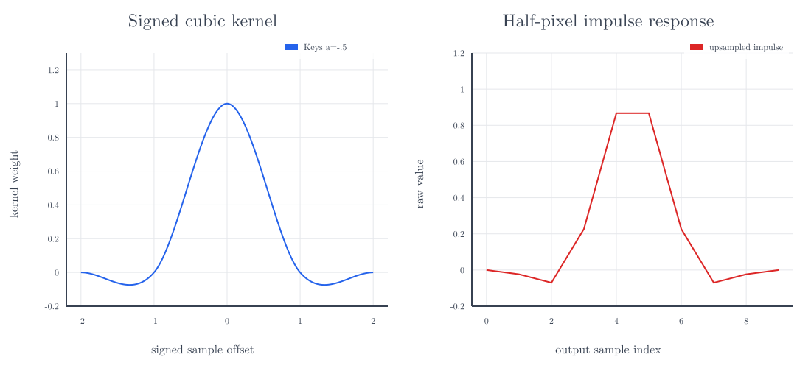
CRD subpixel shuffle is an exact permutation
For scale r,the packed input channel is c*r*r+dy*r+dx. A reshape, transpose and reshape sends it to the corresponding enlarged pixel. No interpolation or fitted weights occur in this permutation. DCR ordering would arrange multiple output channels differently. A learned convolution before the permutation predicts these packed spatial samples.
#include <dm/dm.hpp>
int main() {
namespace n = dm::nn;
namespace m = n::models;
const auto x = n::arange(0, 16).reshape({1, 1, 2, 8}).requires_grad_();
const auto y = m::SRPixelShuffle(x, 2, 2), up = n::arange(1, 17).reshape(y.shape()),
g = n::grad(n::sum(y * up), {x})[0];
std::print(
"Packed shape1x1x2x8 -> image1x2x4x2;all16 input adjoints finite:{}\n",
n::all(n::is_finite(g)).item<bool>());
const auto first = n::select(n::select(y, 0, 0), 2, 0),
second = n::select(n::select(y, 0, 0), 2, 1);
auto a = n::plot_tensor_map(n::reverse(first, {0}), 0, 15),
b = n::plot_tensor_map(n::reverse(second, {0}), 0, 15);
a.title("CRD output channel0").x_label("enlarged column").y_label("original row0 at bottom");
b.title("CRD output channel1").x_label("enlarged column").y_label("original row0 at bottom");
auto layout = dm::graphics::RLayout::create(1, 2);
layout.add(a).add(b).size(1100, 500).fit_panels().save_svg("build/super_resolution_shuffle.svg");
}Packed shape1x1x2x8 -> image1x2x4x2;all16 input adjoints finite:true
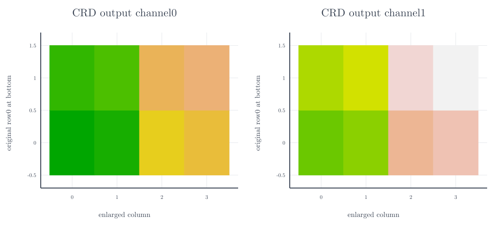
Channel attention sees global spatial context
RCAN averages every residual feature channel over H and W,learns a1x1 bottleneck with ReLU,expands back to the feature width and applies sigmoid gates. The gates multiply the residual branch before its short skip. Group and body skips carry lower-frequency features around deeper transformations. The spatial mean remains differentiable:it is not an estimated host statistic.
#include <dm/dm.hpp>
int main() {
namespace n = dm::nn;
namespace m = n::models;
n::ParameterStore p(17);
const auto x = (n::arange(0, 48).reshape({1, 3, 4, 4}) * .02 + .1).requires_grad_();
const auto gate = m::SRChannelAttention(p, "attention", x, 4, 2);
const auto gradients = n::grad(n::sum(gate.output), {x});
std::print(
"Four sigmoid gates:{};all input derivatives finite:{};{} learned tensors.\n",
gate.gates,
n::all(n::is_finite(gradients[0])).item<bool>(),
p.size());
auto a = dm::graphics::RPlot::create(), b = dm::graphics::RPlot::create();
a.bars({0., 1., 2., 3.}, gate.gates.to_vector<double>(), "channel gate", {37, 99, 235})
.title("Learned global channel gates")
.x_label("feature channel")
.y_label("sigmoid weight")
.y_limits(0, 1.3);
b.bars(
{0., 1., 2., 3.},
n::mean(n::abs(gradients[0]), {0, 1, 2}).to_vector<double>(),
"input adjoint",
{22, 163, 74})
.title("Gradients include pooled context")
.x_label("feature channel")
.y_label("mean absolute input derivative")
.y_limits(0, 1.1);
auto layout = dm::graphics::RLayout::create(1, 2);
layout.add(a).add(b).size(1100, 500).fit_panels().save_svg(
"build/super_resolution_attention.svg");
}Four sigmoid gates:float32[1, 1, 1, 4] [[[[0.513881, 0.496246, 0.51306, 0.478391]]]] (grad_fn=Sigmoid);all input derivatives finite:true;4 learned tensors.
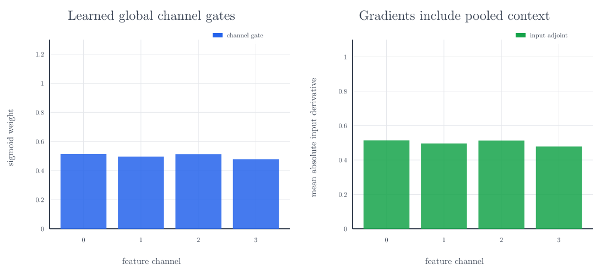
VDSR bounds each update before momentum
The clipping bound is theta/learning_rate. With theta=.01,the raw derivative is clipped to+/- .1 at learning rate.1. The report computes derivatives, clips them as tensors and explicitly calls the momentum optimizer’s step. This bounds the fresh gradient contribution;momentum can accumulate updates. VDSR alone adds an image-space bicubic skip and uses20 convolutional layers. Its final residual kernel starts at normal(.001),as in this source experiment.
#include <dm/dm.hpp>
int main() {
namespace n = dm::nn;
namespace m = n::models;
const auto raw = n::arange(-.3, .3001, .002, n::DType::Float64),
clipped = m::VdsrClippedGradient(raw, .1), other = m::VdsrClippedGradient(raw, .01);
std::print(
"rate.1 bound {:.9f};clipped coordinates {}/{}.\n",
double(.01f / .1f),
n::count_nonzero(n::greater(n::abs(raw), double(.01f / .1f))).item<std::int64_t>(),
raw.numel());
auto a = dm::graphics::RPlot::create(), b = dm::graphics::RPlot::create();
a.lines(raw.to_vector<double>(), clipped.to_vector<double>(), "rate .1", {37, 99, 235})
.lines(raw.to_vector<double>(), other.to_vector<double>(), "rate .01", {220, 38, 38})
.title("Adjustable derivative clipping")
.x_label("raw derivative")
.y_label("derivative sent to optimizer")
.y_limits(-.4, .5);
b.lines(
raw.to_vector<double>(), (.1 * clipped).to_vector<double>(), "fresh step .1", {37, 99, 235})
.lines(
raw.to_vector<double>(),
(.01 * other).to_vector<double>(),
"fresh step .01",
{220, 38, 38})
.title("Fresh update before momentum")
.x_label("raw derivative")
.y_label("rate times clipped derivative")
.y_limits(-.013, .018);
auto layout = dm::graphics::RLayout::create(1, 2);
layout.add(a).add(b).size(1100, 500).fit_panels().save_svg("build/super_resolution_clipping.svg");
}rate.1 bound 0.099999994;clipped coordinates 202/301.
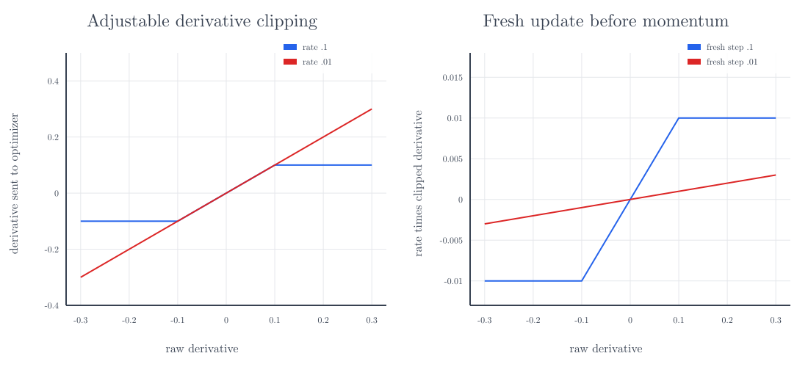
Five distinct complete graphs
SRCNN consumes bicubic Y and applies VALID9-1-5 convolutions with64/32 hidden channels,so its32 input becomes20 output. ESPCN works on LR Y with SAME5-3-3, tanh64/32 channels and CRD shuffle. VDSR reconstructs residual Y. EDSR and RCAN learn RGB in LR space with fixed mean shift,feature skips and learned upsampling;they do not add the bicubic image. Every architecture omits BN.
Full models execute on small rectangular inputs. Training keeps full SRCNN/ESPCN;VDSR uses16 channels/20 layers,EDSR16 channels/8 blocks,and RCAN16 channels/2 groups/3 blocks/reduction4. Full EDSR is256 channels/32 blocks;full RCAN is64 channels/10 groups/20 blocks/reduction16. Native checks execute full backward passes and verify every declared parameter and stage;inactive attention ReLU branches can legitimately have zero gradients.
#include <dm/dm.hpp>
int main() {
namespace n = dm::nn;
namespace m = n::models;
n::set_num_threads(2);
std::print(
"| model | full scalars | full leaves | compact scalars | compact leaves | "
"compact stages |\n|---|---:|---:|---:|---:|---:|\n");
for (auto kind :
{m::SRKind::kSrcnn,
m::SRKind::kEspcn,
m::SRKind::kVdsr,
m::SRKind::kEdsr,
m::SRKind::kRcan}) {
std::int64_t full = 0;
std::size_t leaves = 0;
{
n::NoGradGuard guard;
n::ParameterStore p(17);
const auto cfg = m::SRConfig::Full(kind);
const int side = cfg.PreUpsampled() ? 17 : 3;
const auto out = m::SuperResolution(p, n::full({1, side, side + 2, cfg.Channels()}, .4), cfg);
if (!n::all(n::is_finite(out.image)).item<bool>())
return 1;
full = p.count();
leaves = p.size();
}
n::NoGradGuard guard;
n::ParameterStore p(17);
const auto cfg = m::SRConfig::Compact(kind);
const int side = cfg.PreUpsampled() ? 17 : 3;
const auto out = m::SuperResolution(p, n::full({1, side, side + 2, cfg.Channels()}, .4), cfg);
std::print(
"| {} | {} | {} | {} | {} | {} |\n",
m::SRName(kind),
full,
leaves,
p.count(),
p.size(),
out.stages.size());
}
}| model | full scalars | full leaves | compact scalars | compact leaves | compact stages |
|---|---|---|---|---|---|
| srcnn | 8129 | 6 | 8129 | 6 | 2 |
| espcn | 21284 | 6 | 21284 | 6 | 3 |
| vdsr | 665921 | 40 | 42065 | 40 | 19 |
| edsr | 40729603 | 136 | 49603 | 40 | 11 |
| rcan | 15444643 | 1628 | 45851 | 60 | 5 |
Actual CIFAR data and an unchanged bicubic reference
Read the original CIFAR-10 binaries from the dataset cache. Fitting uses training rows0..127;validation128..159;test uses original test rows64..95. Each split retains128/32/32 original RGB images. The input preview shows original HR RGB,true LR enlarged only for display,and raw bicubic32. The histogram shows fitting-image studio-range Y and the central reconstruction error of bicubic;all numeric preprocessing and plot data use tensors.
#include <dm/dm.hpp>
int main() {
namespace n = dm::nn;
namespace m = n::models;
n::set_num_threads(2);
std::filesystem::path cache;
if (const auto* p = std::getenv("DATAMUNGE_DATA_DIR"))
cache = p;
else if (const auto* p = std::getenv("XDG_CACHE_HOME"))
cache = std::filesystem::path(p) / "datamunge/datasets";
else
cache = std::filesystem::path(std::getenv("HOME")) / ".cache/datamunge/datasets";
dm::datasets::fetch("cifar10", (cache / "cifar10").string());
const auto train = n::data::LoadCifar({cache / "cifar10/data_batch_1.bin"}, n::data::Cifar::k10),
test = n::data::LoadCifar({cache / "cifar10/test_batch.bin"}, n::data::Cifar::k10);
std::vector<std::int64_t> fit_rows, val_rows, test_rows;
for (int i = 0; i < 128; ++i)
fit_rows.push_back(i);
for (int i = 128; i < 160; ++i)
val_rows.push_back(i);
for (int i = 64; i < 96; ++i)
test_rows.push_back(i);
const auto fitting = m::SRPairs(train.images, fit_rows),
validation = m::SRPairs(train.images, val_rows),
testing = m::SRPairs(test.images, test_rows);
const auto original = n::slice_axis(fitting.hr, 0, 0, 8),
lr = n::resize_nearest(n::slice_axis(fitting.lr, 0, 0, 8), {32, 32}),
bicubic = n::slice_axis(fitting.bicubic, 0, 0, 8);
std::filesystem::create_directories("figures");
n::save_image_grid(
n::concat({original, lr, n::clip(bicubic, 0., 1.)}, 2),
"build/super_resolution_inputs.png",
2,
0,
1,
2,
0,
3);
const auto y = m::SRLumaTensor(fitting.hr), edges = n::arange(0., 1.0001, .02, n::DType::Float64),
left = n::slice_axis(edges, 0, 0, 50), right = n::slice_axis(edges, 0, 1, 51),
centers = (left + right) / 2.;
const auto values = y.reshape({-1, 1}),
hits = n::logical_and(
n::greater_equal(values, left.reshape({1, 50})),
n::less(values, right.reshape({1, 50}))),
density = n::sum(hits.to(n::DType::Float64), {0}) / (y.numel() * .02);
const auto aligned = m::SRScoreImages(fitting.bicubic, fitting);
const auto errors = n::mean(n::square(aligned[0] - aligned[1]), {1, 2, 3});
const auto score = m::ScoreTensorSR(testing.bicubic, testing);
std::print(
"128 fitting/32 validation/32 original test images;HR32/LR16 x2. Test bicubic "
"mean Y PSNR {:.6f}dB,SSIM {:.6f};pooled PSNR {:.6f}dB.\n",
score.psnr.item(),
score.ssim.item(),
m::SRPSNRTensor(score.mse).item());
auto a = dm::graphics::RPlot::create(), b = dm::graphics::RPlot::create();
a.bars(
centers.to_vector<double>(),
density.to_vector<double>(),
"original HR Y",
{37, 99, 235},
.018)
.title("Actual fitting-image luminance")
.x_label("studio-range BT.601 Y")
.y_label("pixel density")
.y_limits(0, n::max(density).item() * 1.4);
b.points(
n::arange(0, 128).to_vector<double>(),
m::SRPSNRTensor(errors).to_vector<double>(),
"bicubic fit PSNR",
{147, 51, 234})
.title("Bicubic preserves different detail")
.x_label("original fitting image row")
.y_label("central Y PSNR in dB")
.y_limits(0, 50);
auto layout = dm::graphics::RLayout::create(1, 2);
layout.add(a).add(b).size(1100, 500).fit_panels().save_svg("build/super_resolution_data.svg");
}128 fitting/32 validation/32 original test images;HR32/LR16 x2. Test bicubic mean Y PSNR 26.711192dB,SSIM 0.854135;pooled PSNR 26.225596dB.
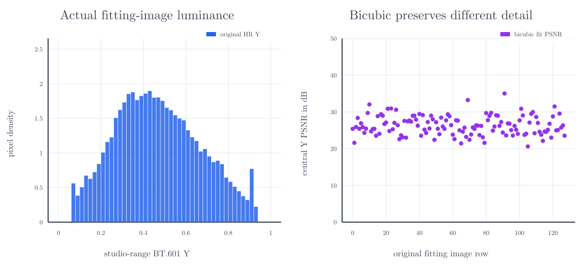
Explicit optimization for every model
Each model gets its own seeded ParameterStore. Warm all leaves before constructing its optimizer. SRCNN,ESPCN,EDSR and RCAN use Adam(.001). VDSR uses momentum(.9) SGD(.1) with explicit theta/rate derivative clipping. Y models minimize raw MSE;RGB EDSR/RCAN minimize raw RGB L1. No training prediction is clipped. The loop shows all48 updates per model,240 overall.
Validation loss selects a separate checkpoint for each architecture. A new store restores it and predicts from observed input alone. Check restoration, repeatability,immutable leaves and single/batch agreement. Common evaluation uses HR coordinates6..25,a20x20 Y crop. Convert RGB to studio-range BT.601 Y, then clamp predictions/reference only for metrics;retain raw training outputs. PSNR is averaged per image,as is Gaussian11x11/sigma1.5 valid-window SSIM. These small source-specific crops are not published SR benchmarks.
#include <dm/dm.hpp>
int main() {
namespace n = dm::nn;
namespace m = n::models;
n::set_num_threads(2);
std::filesystem::path cache;
if (const auto* p = std::getenv("DATAMUNGE_DATA_DIR"))
cache = p;
else if (const auto* p = std::getenv("XDG_CACHE_HOME"))
cache = std::filesystem::path(p) / "datamunge/datasets";
else
cache = std::filesystem::path(std::getenv("HOME")) / ".cache/datamunge/datasets";
dm::datasets::fetch("cifar10", (cache / "cifar10").string());
const auto train = n::data::LoadCifar({cache / "cifar10/data_batch_1.bin"}, n::data::Cifar::k10),
test = n::data::LoadCifar({cache / "cifar10/test_batch.bin"}, n::data::Cifar::k10);
std::vector<std::int64_t> fit_rows, val_rows, test_rows;
for (int i = 0; i < 128; ++i)
fit_rows.push_back(i);
for (int i = 128; i < 160; ++i)
val_rows.push_back(i);
for (int i = 64; i < 96; ++i)
test_rows.push_back(i);
const auto fitting = m::SRPairs(train.images, fit_rows),
validation = m::SRPairs(train.images, val_rows),
testing = m::SRPairs(test.images, test_rows);
std::filesystem::create_directories("build");
std::filesystem::create_directories("figures");
const std::vector<m::SRKind> kinds = {
m::SRKind::kSrcnn, m::SRKind::kEspcn, m::SRKind::kVdsr, m::SRKind::kEdsr, m::SRKind::kRcan};
const std::array<dm::graphics::RGB, 5> colors = {
{{37, 99, 235}, {220, 38, 38}, {22, 163, 74}, {147, 51, 234}, {234, 88, 12}}};
auto yplot = dm::graphics::RPlot::create(), rgbplot = dm::graphics::RPlot::create();
std::vector<double> psnr, ssim;
const auto bicubic = m::ScoreTensorSR(testing.bicubic, testing);
int index = 0;
std::print(
"| model | selected | initial fit | restored fit | validation | test PSNR dB | "
"SSIM | pooled PSNR dB |\n|---|---:|---:|---:|---:|---:|---:|---:|\n");
for (auto kind : kinds) {
const auto cfg = m::SRConfig::Compact(kind);
const auto fit = m::PrepareSR(fitting, cfg), val = m::PrepareSR(validation, cfg),
test = m::PrepareSR(testing, cfg);
const auto name = std::string(m::SRName(kind));
n::ParameterStore p(17);
{
n::NoGradGuard guard;
m::SuperResolution(p, n::slice_axis(fit.x, 0, 0, 1), cfg);
}
n::OptimizerConfig options;
options.kind = kind == m::SRKind::kVdsr ? n::OptimizerKind::Momentum : n::OptimizerKind::Adam;
options.momentum = .9;
const double rate = kind == m::SRKind::kVdsr ? .1 : .001;
n::Optimizer optimizer(p, rate, options);
auto objective = [&](n::ParameterStore& store, const n::Tensor& x, const n::Tensor& y) {
const auto diff = m::SuperResolution(store, x, cfg).image - y;
return cfg.Channels() == 3 ? n::mean(n::abs(diff)) : n::mean(n::square(diff));
};
auto evaluate = [&](const m::SRPrepared& data) {
n::NoGradGuard guard;
n::Tensor sum = n::full({}, 0., n::DType::Float64);
for (std::int64_t i = 0; i < data.x.size(0); i += 8) {
const auto end = std::min(i + 8, data.x.size(0));
sum = sum + objective(p, n::slice_axis(data.x, 0, i, end), n::slice_axis(data.y, 0, i, end))
.to(n::DType::Float64) *
double(end - i);
}
return (sum / double(data.x.size(0))).item();
};
const m::SRPrepared probe{n::slice_axis(fit.x, 0, 0, 8), n::slice_axis(fit.y, 0, 0, 8)};
const double initial = evaluate(probe);
double best = INFINITY, peak = 0;
std::int64_t clipped = 0;
int selected = 0, updates = 0;
n::BatchOrder order(128, 8, 29);
std::vector<double> epochs, history, validation_history;
const auto checkpoint = "build/super_resolution_" + name + "_best.npz";
for (int epoch = 1; epoch <= 3; ++epoch) {
order.begin_epoch();
n::Tensor total = n::full({}, 0., n::DType::Float64);
int seen = 0;
for (auto rows = order.next(); !rows.empty(); rows = order.next()) {
const auto loss = objective(p, m::SRBatch(fit.x, rows), m::SRBatch(fit.y, rows));
if (!std::isfinite(loss.item()))
return 1;
total = total + loss.detach().to(n::DType::Float64) * double(rows.size());
seen += rows.size();
auto gradients = n::grad(loss, p.parameters());
if (kind == m::SRKind::kVdsr) {
for (auto& g : gradients) {
peak = std::max(peak, n::max(n::abs(g)).item());
clipped += n::count_nonzero(n::greater(n::abs(g), double(.01f / float(rate))))
.item<std::int64_t>();
g = m::VdsrClippedGradient(g, rate);
}
}
optimizer.step(gradients);
++updates;
}
if (seen != 128)
return 1;
epochs.push_back(epoch);
history.push_back((total / 128.).item());
validation_history.push_back(evaluate(val));
if (validation_history.back() < best) {
best = validation_history.back();
selected = epoch;
p.save(checkpoint);
}
}
p.load(checkpoint);
const double learned = evaluate(probe);
if (std::abs(evaluate(val) - best) > 1e-8 || learned >= initial ||
history.back() >= history.front() || updates != 48)
return 1;
n::ParameterStore deployed(991);
{
n::NoGradGuard guard;
m::SuperResolution(deployed, n::slice_axis(test.x, 0, 0, 1), cfg);
}
deployed.load(checkpoint);
std::vector<n::Tensor> snapshot;
for (const auto& w : deployed.parameters())
snapshot.push_back(w.clone());
auto predict = [&](n::ParameterStore& store, const n::Tensor& x) {
n::NoGradGuard guard;
std::vector<n::Tensor> parts;
for (std::int64_t i = 0; i < x.size(0); i += 8)
parts.push_back(
m::SuperResolution(store, n::slice_axis(x, 0, i, std::min(i + 8, x.size(0))), cfg)
.image);
return n::concat(parts, 0);
};
const auto prediction = predict(deployed, test.x), reference = predict(p, test.x),
repeat = predict(deployed, test.x),
single = predict(deployed, n::slice_axis(test.x, 0, 3, 4));
const double parity = n::max(n::abs(prediction - reference)).item(),
batch_error = n::max(n::abs(single - n::slice_axis(prediction, 0, 3, 4))).item();
if (parity > 1e-7 || batch_error > 1e-5 || !n::all(n::equal(prediction, repeat)).item<bool>())
return 1;
for (std::size_t i = 0; i < snapshot.size(); ++i)
if (!n::all(n::equal(snapshot[i], deployed.parameters()[i])).item<bool>())
return 1;
const auto score = m::ScoreTensorSR(prediction, testing);
psnr.push_back(score.psnr.item());
ssim.push_back(score.ssim.item());
std::print(
"| {} | {} | {:.6f} | {:.6f} | {:.6f} | {:.6f} | {:.6f} | {:.6f} |\n",
name,
selected,
initial,
learned,
best,
score.psnr.item(),
score.ssim.item(),
m::SRPSNRTensor(score.mse).item());
std::print(
"{}:{} explicit updates,{} immutable leaves,restore parity {:.3g},single/batch "
"max {:.3g};VDSR-only raw-gradient tracker {:.6f},clipped coordinates {}.\n",
name,
updates,
p.size(),
parity,
batch_error,
peak,
clipped);
n::save_image_grid(
m::SRPreviewTiles(testing, prediction),
"build/super_resolution_" + name + "_predictions.png",
4,
0,
1,
2,
0,
3);
n::save_npz(
"build/super_resolution_" + name + "_outputs.npz",
{{"observed", test.x},
{"raw_prediction", prediction},
{"original_hr", testing.hr},
{"bicubic", testing.bicubic}});
auto& plot = cfg.Channels() == 1 ? yplot : rgbplot;
plot.lines(epochs, history, name + " fit", colors[index]);
plot.points(epochs, validation_history, name + " val", colors[index]);
++index;
}
std::print(
"Unchanged bicubic:mean PSNR {:.6f}dB,SSIM {:.6f};all32 test images,central20x20 Y.\n",
bicubic.psnr.item(),
bicubic.ssim.item());
auto a = dm::graphics::RPlot::create(), b = dm::graphics::RPlot::create();
const std::vector<double> x = {0, 1, 2, 3, 4};
a.bars(x, psnr, "learned", {37, 99, 235})
.lines({-.5, 4.5}, {bicubic.psnr.item(), bicubic.psnr.item()}, "bicubic", {220, 38, 38})
.title("All32 test images:Y PSNR")
.x_label("0 SRCNN,1 ESPCN,2 VDSR,3 EDSR,4 RCAN")
.y_label("mean per-image PSNR in dB")
.y_limits(0, 35);
b.bars(x, ssim, "learned", {22, 163, 74})
.lines({-.5, 4.5}, {bicubic.ssim.item(), bicubic.ssim.item()}, "bicubic", {220, 38, 38})
.title("Same crop:Gaussian SSIM")
.x_label("0 SRCNN,1 ESPCN,2 VDSR,3 EDSR,4 RCAN")
.y_label("mean per-image valid SSIM")
.y_limits(-.1, 1.2);
auto metrics = dm::graphics::RLayout::create(1, 2);
metrics.add(a).add(b).size(1200, 500).fit_panels().save_svg("build/super_resolution_metrics.svg");
std::filesystem::copy_file(
"build/super_resolution_metrics.svg",
"figures/super_resolution_metrics.svg",
std::filesystem::copy_options::overwrite_existing);
yplot.title("Y networks:raw MSE").x_label("epoch").y_label("fitting lines,validation points");
rgbplot.title("RGB networks:raw L1").x_label("epoch").y_label("fitting lines,validation points");
auto curves = dm::graphics::RLayout::create(1, 2);
curves.add(yplot).add(rgbplot).size(1200, 550).fit_panels().save_svg(
"build/super_resolution_training.svg");
}| model | selected | initial fit | restored fit | validation | test PSNR dB | SSIM | pooled PSNR dB |
|---|---|---|---|---|---|---|---|
| srcnn | 3 | 0.216841 | 0.008918 | 0.006315 | 22.148917 | 0.590150 | 21.803183 |
srcnn:48 explicit updates,6 immutable leaves,restore parity 0,single/batch max 0;VDSR-only raw-gradient tracker 0.000000,clipped coordinates 0.
| espcn | 3 | 0.244275 | 0.011406 | 0.010886 | 21.950641 | 0.643553 | 21.722594 |
espcn:48 explicit updates,6 immutable leaves,restore parity 0,single/batch max 0;VDSR-only raw-gradient tracker 0.000000,clipped coordinates 0.
| vdsr | 3 | 0.002713 | 0.002708 | 0.001854 | 26.724767 | 0.855048 | 26.237737 |
vdsr:48 explicit updates,40 immutable leaves,restore parity 0,single/batch max 0;VDSR-only raw-gradient tracker 0.001174,clipped coordinates 0.
| edsr | 3 | 0.197318 | 0.061267 | 0.054009 | 26.378973 | 0.845764 | 25.892060 |
edsr:48 explicit updates,40 immutable leaves,restore parity 0,single/batch max 0;VDSR-only raw-gradient tracker 0.000000,clipped coordinates 0.
| rcan | 3 | 0.212365 | 0.063542 | 0.056102 | 25.723750 | 0.818210 | 25.247060 |
rcan:48 explicit updates,60 immutable leaves,restore parity 0,single/batch max 0;VDSR-only raw-gradient tracker 0.000000,clipped coordinates 0. Unchanged bicubic:mean PSNR 26.711192dB,SSIM 0.854135;all32 test images,central20x20 Y.
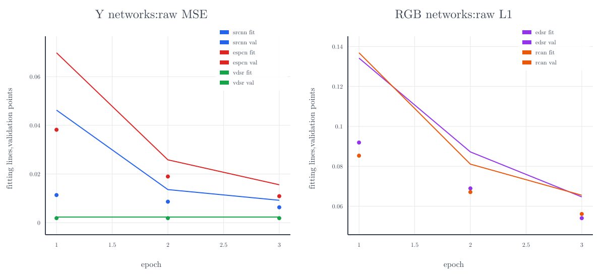
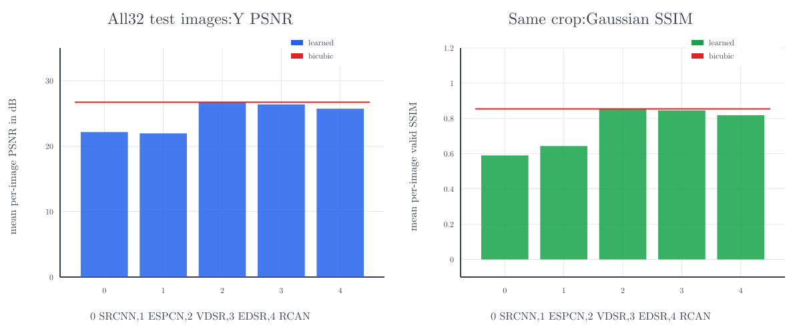
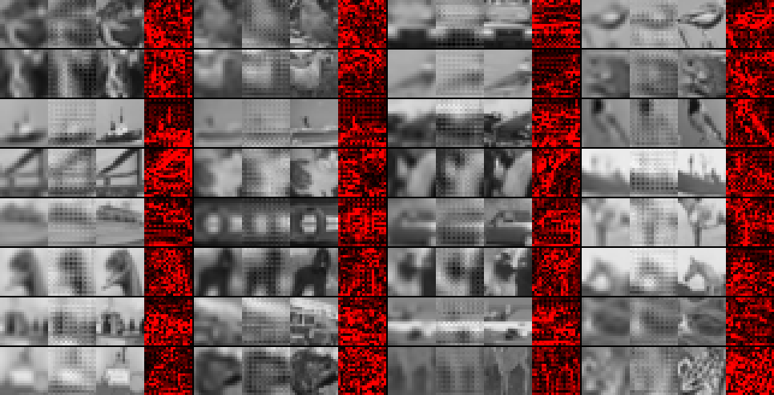
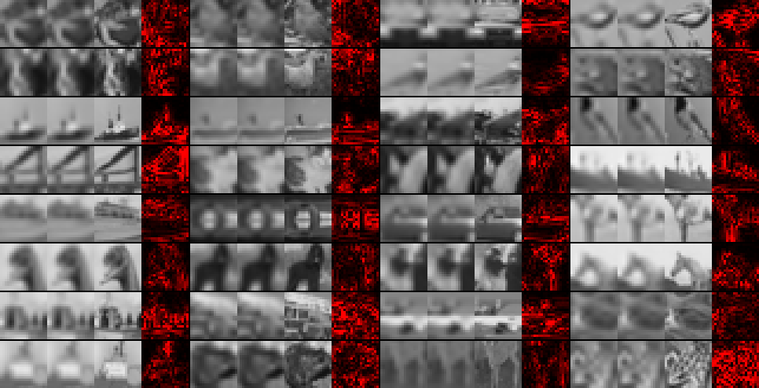
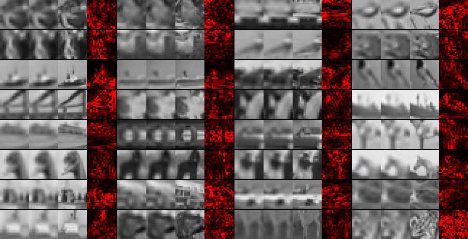
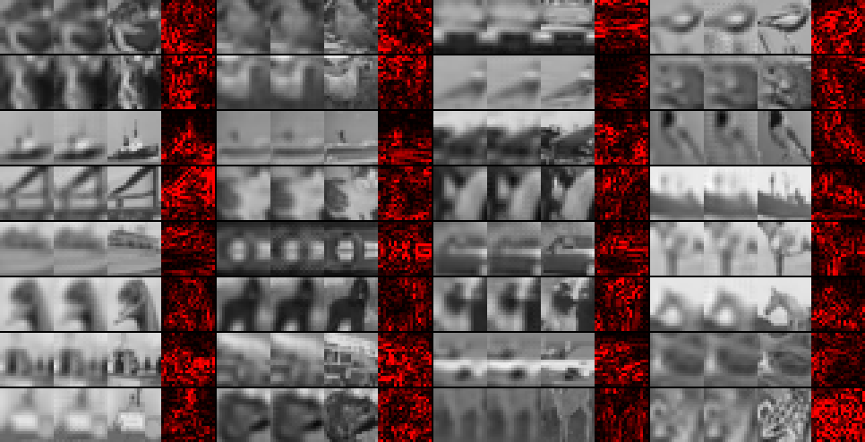
Compare all five learned families with bicubic on the complete32-image subset. Small PSNR or SSIM differences on this bounded fit do not establish a benchmark improvement. The printed VDSR clipping counter and maximum raw derivative show whether its constraint was active; the independent clipping fixture above exercises a case where it is active.
A falling training objective does not establish recovered high-frequency detail on new images. Compare every model with the fixed bicubic line and inspect every held-out tile. The preview’s enlargement only makes original pixels visible;it does not increase their information. These compact fits preserve architectural mechanisms without claiming paper-level accuracy.
Regenerate adjacent views from this run
#include <dm/dm.hpp>
int main() {
std::filesystem::copy_file(
"build/super_resolution_edsr_predictions.png",
"build/export_super_resolution_edsr_predictions.png",
std::filesystem::copy_options::overwrite_existing);
}#include <dm/dm.hpp>
int main() {
std::filesystem::copy_file(
"build/super_resolution_espcn_predictions.png",
"build/export_super_resolution_espcn_predictions.png",
std::filesystem::copy_options::overwrite_existing);
}#include <dm/dm.hpp>
int main() {
std::filesystem::copy_file(
"build/super_resolution_inputs.png",
"build/export_super_resolution_inputs.png",
std::filesystem::copy_options::overwrite_existing);
}#include <dm/dm.hpp>
int main() {
std::filesystem::copy_file(
"build/super_resolution_metrics.svg",
"build/export_super_resolution_metrics.svg",
std::filesystem::copy_options::overwrite_existing);
}#include <dm/dm.hpp>
int main() {
std::filesystem::copy_file(
"build/super_resolution_rcan_predictions.png",
"build/export_super_resolution_rcan_predictions.png",
std::filesystem::copy_options::overwrite_existing);
}#include <dm/dm.hpp>
int main() {
std::filesystem::copy_file(
"build/super_resolution_srcnn_predictions.png",
"build/export_super_resolution_srcnn_predictions.png",
std::filesystem::copy_options::overwrite_existing);
}#include <dm/dm.hpp>
int main() {
std::filesystem::copy_file(
"build/super_resolution_vdsr_predictions.png",
"build/export_super_resolution_vdsr_predictions.png",
std::filesystem::copy_options::overwrite_existing);
}Conclusion
The executed tables and prediction galleries above describe this run and its selected checkpoint. Evaluate held-out errors against the displayed baselines and validation controls within the stated fitting budget.
References
- [Dong et al.,Image Super-Resolution Using Deep Convolutional Networks](https://arxiv.org/abs/1501.00092).
- [Shi et al.,Real-Time Single Image and Video Super-Resolution Using an Efficient Sub-Pixel Convolutional Neural Network](https://arxiv.org/abs/1609.05158).
- [Kim et al.,Accurate Image Super-Resolution Using Very Deep Convolutional Networks](https://cv.snu.ac.kr/research/VDSR/).
- [Lim et al.,Enhanced Deep Residual Networks for Single Image Super-Resolution](https://arxiv.org/abs/1707.02921).
- [Zhang et al.,Image Super-Resolution Using Very Deep Residual Channel Attention Networks](https://arxiv.org/abs/1807.02758).
- [Wang et al.,official SSIM paper and implementation](https://ece.uwaterloo.ca/~z70wang/research/ssim/).